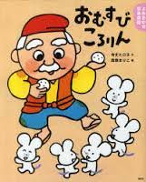

おむすびころりん
A Japanese folktale about a kind old man who drops his rice ball into a hole, leading him to a hidden mouse community.
ドラえもん
A manga featuring a blue robot cat, sent back in time by a young boy's descendant to help lazy, accident-prone Nobita Nobi succeed in life
ぐりとぐら
A series featuring two adorable, culinary-minded field mice who love cooking and eating.
魔女の宅急便
Kiki moves to a seaside town with her talking cat, Jiji, to spend a year alone. After learning to control her broomstick, Kiki sets up a flying courier service.
キッチン
A poignant, contemporary Japanese novella following Mikage Sakurai, a young woman who finds solace, comfort, and a found family in the kitchen after the death of her grandmother.
お探し物は図書室まで
A novel about a mystical librarian, Sayuri Komachi, who guides patrons at life's crossroads toward their true desires by recommending the perfect book and a small, handmade felt gift.